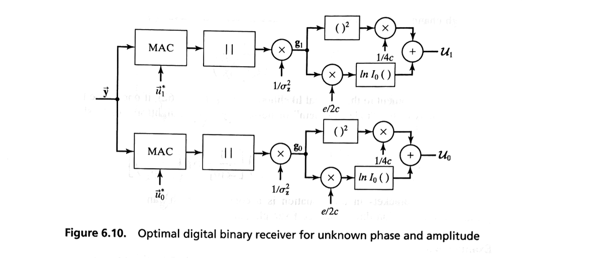

Unknown Amplitude#
Radio systems often operate over channels where the amplitude of the received signal is a random variable.
The most common example of this phenomenon is the multipath fading channel, characterized by the many propagation paths from the transmitter to the receiver.
The total received signal from these many paths, i.e., multipath, exhibits an amplitude that is the result of mutual interference, sometimes constructive and sometimes destructive.
Specific examples of multipath fading channels include
The high-frequency (HF) skywave channel, which allows communications between geographically distant sites by the refraction of radio waves through the earth’s ionosphere.
The relatively large beamwidths of the antennas and natural irregularities in the ionosphere cause the multipath phenomenon.
The troposcatter channel, which allows communications between distant sites by the scattering of radio waves from molecules in the earth’s troposphere.
Almost any high-resolution radar system, where the received signal is composed of reflections from many different portions of the “target.”
The mobile radio communication channel, where the resultant signal can be composed of both a direct path and various multipath reflections from nearby structures.
Because of the nature of these types of channels, it is usually impractical or impossible to estimate the phase of the received signal. Thus, we are concerned with a situation where both the amplitude and phase are random variables.
Signal Modelling#
Using the derivations in the previous section, we can rewrite the vector form of the signal as
where \( \alpha_i \) represents the amplitude under hypothesis \( H_i \).
Conditional Density Functions#
Assuming the noise is white with a correlation matrix of \( \sigma_z^2 I \), the conditional density functions are
which can be written as
Unknown Uniform Phase#
Assuming the phases \( \beta_i \) are each uniform on the interval \( (0, 2\pi) \), we arrive at a conditional density function (from the derivation in the previous section):
Unknown Rician Amplitude#
In order to proceed further, we must find a useful and appropriate density function for \( p(\alpha_i) \) so that we can determine the unconditional pdf
One general and appropriate model for the amplitude density function is a Rician, i.e.,
where \( \kappa_i^2 \) is proportional to the power if the multipath signal contains any nonstochastic or direct components and \( \sigma_i^2 \) is proportional to the random multipath power.
If \( \kappa_i = 0 \), the density function is a Rayleigh, corresponding to the generally well-known Rayleigh fading channel.
Many authors have used the Rician or Rayleigh fading channels to accurately model “real” channels of interest.
Using the Rician pdf \(p(\alpha_i)\), we can write the unconditional density function as
The integral is evaluated as
so that the unconditional density function is
where
the random variable \( g_i \) is
and
Likelihood Ratio#
It follows that the likelihood ratio is
Although the derivation can proceed somewhat further, it is more instructive to limit it to practical situations.
For example, since the channel attenuation introduces a random amplitude, signals would normally be chosen to have equal energy, i.e.,
Furthermore, if the signals under both hypotheses traverse the same channel, then
and
Taken together, these restrictions imply
and
from which, \(L(\vec{y})\) can be simplified to
or the log-likelihood ratio is
Recevier Structure#
Using the preceding equation, we see that Figure 6.10 shows an optimal binary digital receiver under these conditions.

From the figure, it can be seen that, even though it is not necessary to know the random amplitude \( \alpha \), in order to implement this receiver it is necessary to know its statistical parameters \( \sigma_r^2 \) and \( \kappa \).
Actually, in this case of equal channel conditions, it is unnecessary to implement the receiver of Figure 6.10.
A careful inspection of the receiver indicates that, since the term \( c \) is positive and \( e \) is nonnegative, when one of the decision variables, e.g., \( U_1 \), is greater than the other, \( U_0 \), then \( g_1 > g_0 \), and vice versa. It follows that the receiver of Figure 6.4 is also optimal in this case.
Performance Analysis#
The performance of a receiver structure such as Figure 6.4 in conditions of variable received-signal amplitude \( \alpha \) can be determined analytically under the following conditions.
In the last section, we found this structure’s error-rate performance under conditions of constant amplitude \( \alpha \).
If the channel conditions change slowly with respect to the signaling rate \( 1/T \), then the error rates can be considered as conditional probabilities, conditioned on the amplitude \( \alpha \).
For example, if orthogonal signaling is used, the error rate from Section 6.3 is
It follows that the unconditional error rate is
Apter some calculation steps, we have
Special Case of Rayleigh Channel#
For a Rayleigh channel, \( \kappa = 0 \) and
Consiser the general likelihood ratio above, if one of the hypotheses, say \( H_0 \), corresponds to the “radar problem” of noise only, it is straightforward to show that the likelihood ratio is
The term in square brackets in this equation is a constant, which can be predetermined and incorporated in the decision threshold.